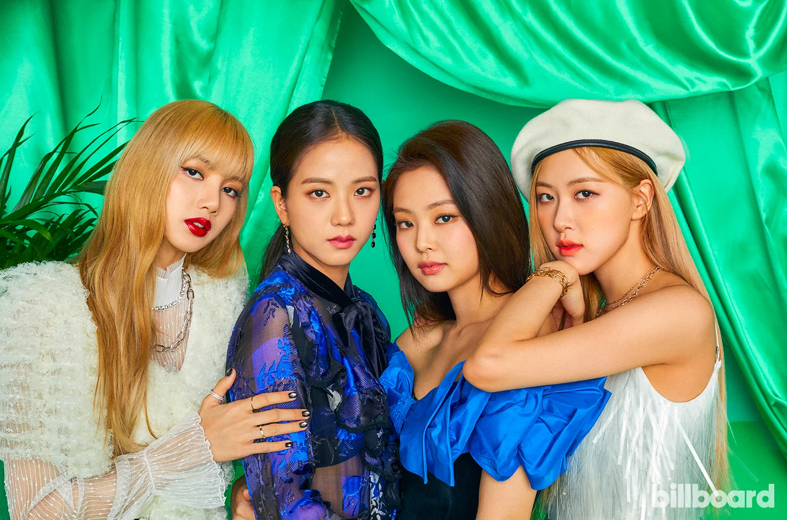
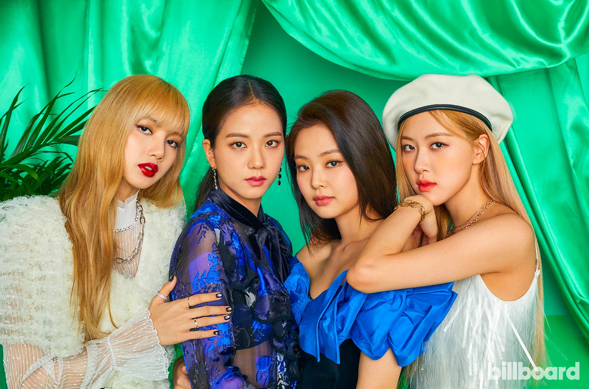

Desde sua estreia em 2016 pela YG Entertainment, o BLACKPINK transformou-se rapidamente em um dos maiores nomes da música mundial, quebrando barreiras entre o K-pop e o mercado ocidental com hits como “DDU-DU DDU-DU”, “Kill This Love” e “How You Like That”, conquistando o topo das paradas internacionais, tornando-se o grupo feminino mais seguido e assistido do mundo, realizando turnês globais históricas como a “Born Pink World Tour”, que se tornou uma das mais lucrativas da história para um grupo feminino, além de marcar presença em festivais grandiosos como o Coachella, onde fizeram história como headliners, enquanto cada integrante Jisoo, Jennie, Rosé e Lisa também construiu carreiras solo sólidas na música, na atuação e na moda de luxo, atuando como embaixadoras de grandes marcas internacionais, demonstrando versatilidade artística, influência cultural e uma conexão poderosa com fãs ao redor do mundo, consolidando o BLACKPINK como um verdadeiro ícone da música pop contemporânea e um símbolo de representatividade, força e inovação na indústria global do entretenimento.